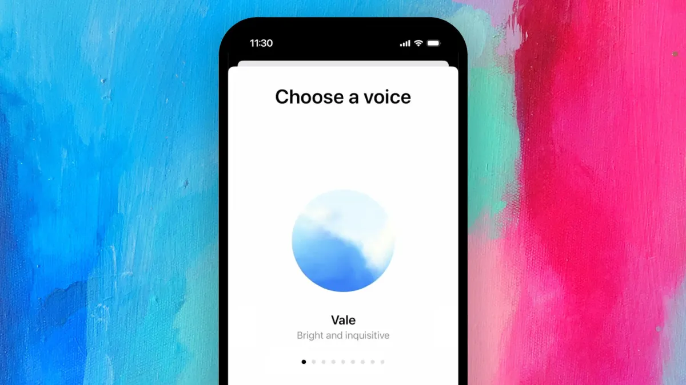

Context & Research Opportunity
SAP's AI-first strategy had generated executive momentum behind voice for Joule, serving 400K+ enterprise customers. The team moved from enthusiasm to engineering without pausing to answer a foundational question: do enterprise users actually want to use voice for work tasks, and when? Without that answer, three organizations were simultaneously building toward different, unvalidated user models.
The Reframe
Original brief
"How should we build Joule Voice?" This assumes voice is inherently valuable and leads directly to feature design.
→
My reframe
"Where does voice earn its place in enterprise workflows?" This questions the premise and leads to investment strategy.
Research Design
Phase 1: Stakeholder alignment (n=7 PM interviews)
- Semi-structured interviews with PM leads across AI, Voice, and Mobile orgs
- JTBD framework: "When would an enterprise user hire voice over touch or keyboard?"
- Cross-org assumption mapping to surface contradictions across teams
- Thematic analysis and workflow mapping to identify where voice might earn adoption
On n=7: The target population was the full set of PM leads with decision authority over voice direction across three orgs. n=7 represented near-complete coverage of that defined group, not a sample of a large population. The goal was to map every live assumption being held, not to estimate a population distribution.
Phase 2: End-user validation (n=15 interviews, 7 job roles)
- Contextual interviews in field scenarios to test the criteria framework
- Hands-occupied simulation and screen-free workflow tasks
- Voice validated in 2 of 7 roles: field technician and warehouse operator
- Remaining 5 roles cited task switching cost and multi-intent complexity as disqualifying factors


Key Findings
1
Voice is situational. It earns adoption in hands-occupied, single-intent moments.
High value was limited to contexts where hands were occupied and the task was simple and singular, such as a field technician logging a status update. Complex, multi-step workflows added cognitive load rather than reducing it.
2
The top barrier was cognitive load, not privacy. Consumer research didn't transfer.
Existing literature predicted privacy concerns as the primary enterprise barrier to voice adoption. End users named cognitive load and workflow complexity instead. This mid-study divergence required recalibrating the criteria framework and reframing the product risk for stakeholders.
3
Three organizations were building toward three incompatible user models
AI, Voice, and Mobile leads each held a different mental model of who would use voice and why. Surfacing these contradictions through cross-org assumption mapping was the prerequisite for alignment. Without it, each team would have optimized for a different user.
Influencing Without Authority
The challenge
Executive enthusiasm and competitive pressure were driving the roadmap, not user evidence. Intervening before the study was complete required framing the research as investment risk mitigation rather than a gatekeeping exercise.
- Rewrote the brief independently. This was not an assigned question. I identified the gap and made the case to pursue it
- Built a shared criteria framework adopted by all three org leads before end-user validation began
- Shifted leadership framing from "voice as an innovation signal" to "voice as a targeted investment with defined fit criteria"
Impact
Speculative voice builds paused
Three orgs aligned on shared adoption criteria
Roadmap reframed from feature delivery to investment strategy
Voice scoped to 2 validated high-fit job roles
Reflection
Run a cross-org assumption workshop before individual PM interviews
The contradictions between organizations emerged gradually across individual interviews. A structured assumption-mapping session with all three org leads at the outset would have surfaced conflicts faster, made the reframe easier to socialize, and reduced the time spent reconstructing a shared picture from separate conversations.